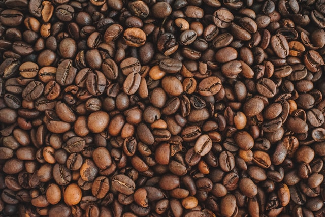
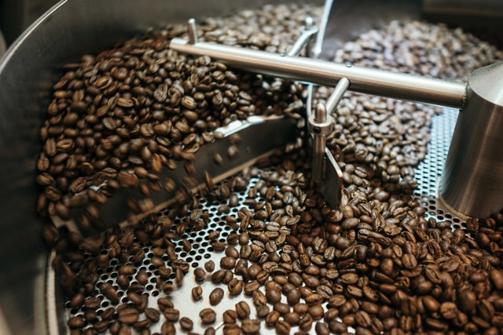
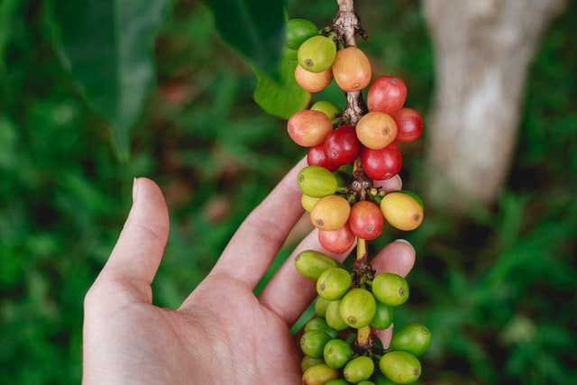
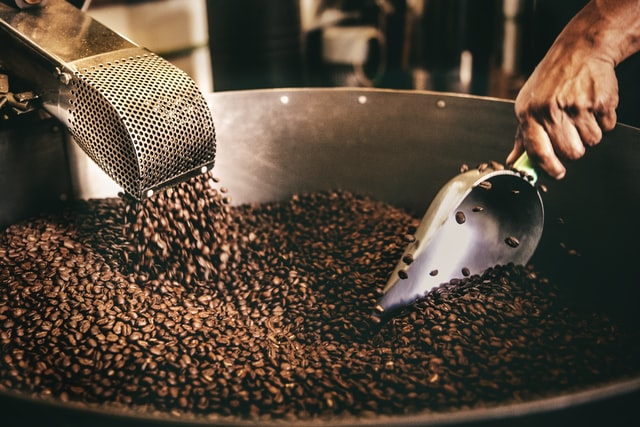
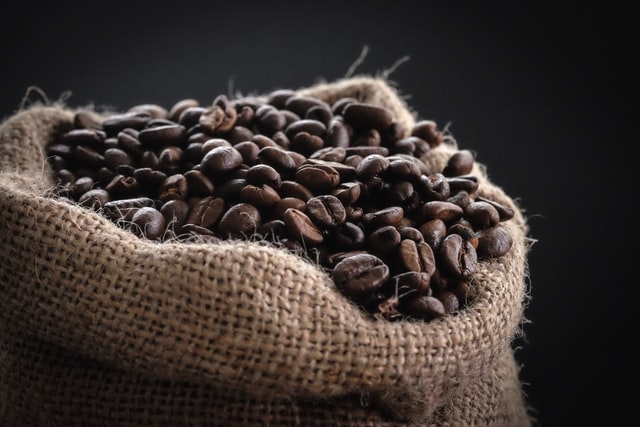

Kopi Jawa

Biji kopi ini merupakan salah satu biji kopi terbaik di dunia, bisa
bayangin kalau udah terbaik rasanya seperti apa? Biji kopi ini juga
punya nama keren lho Java Arabica nah jenis ini biasanya subur
tumbuh di tanah Jawa seperti Kawah Ijen, jawa Timur biji kopi ini
menghasilkan tingkat keasaman yang lebih rendah, jadi buat kamu yang
ga suka kopi yang asam maka Java Arabica rasanya cocok untuk jadi
sahabat terdekat kamu nih.Dari kelima biji kopi diatas kira-kira
sudah ada yang pernah kalian coba? Atau mungkin sudah ada yang jadi
favorit atau bahkan teman setia kamu untuk mendampingi aktivitas
sehari-hari, nah sayangkan tinggal di Indonesia tapi masih belum
pernah nyobain semuanya tenang sekarang kamu ga perlu ke daerahnya
kok kamu bisa cari biji kopi diatas ditempat-tempat ngopi yang lagi
hits di Jakarta dan sekitarnya.
Kopi Toraja

Kopi Toraja terkenal hingga mancanegara karena memiliki citarasa
yang sangat spesial dibandingkan biji kopi sejenis dikarenakan Kopi
Toraja merupakan kopi multidimensi yang tumbuh pada dataran tinggi
yang berjenis arabica berkualitas super.
Kopi Lintong

Biji kopi Lintong merupakan biji kopi yang berasal dari daerah
Sumatra dan menjadi salah satu biji kopi terbaik dunia karena
memiliki keunikan citarasa yang jarang ada pada biji kopi lain, cita
rasa fruity dan lebih segar yang dibalut dengan rasa rempah khas
nusantara menjadikan menu kopi ini salah satu fovorite di benua
Eropa.
Kopi Gayo

Disini pasti banyak dong yang sudah tau Kopi Gayo yang berasal dari
pulau terujung Indonesia? Yapp Aceh, tepatnya Aceh Tenggara jenis
ini merupakan salah satu kopi nusantara yang sangat banyak peminat
dikarenakan rasanya yang sangat unik dan memiliki aroma yang kuat,
cocok untuk kamu yang lagi nongkrong bareng teman-teman yaa.
Kopi Wamena

Berasal dari peggunungan di kabupaten Wamena Provinsi Papua, sudah
kebayang dong rasanya? Hmm Aroma dan rasa yang konsisten menjadikan
para penikmat biji kopi ini memiliki pengalaman minum kopi yang
tidak akan pernah bisa dilupakan. Biji kopi wamena ditanam di
dataran tinggi dan berjenis kopi Arabica serta menggunakan metode
organik maka mebhasilkan biji kopi terbaik dunia.